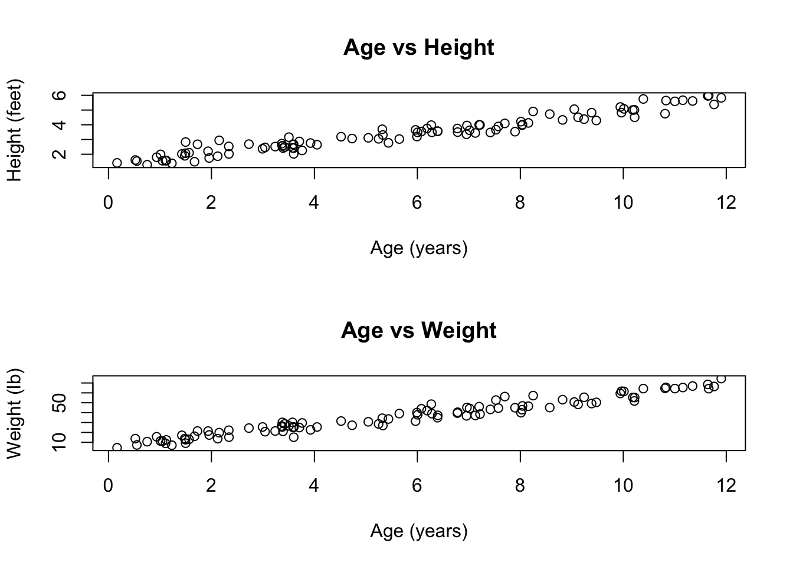
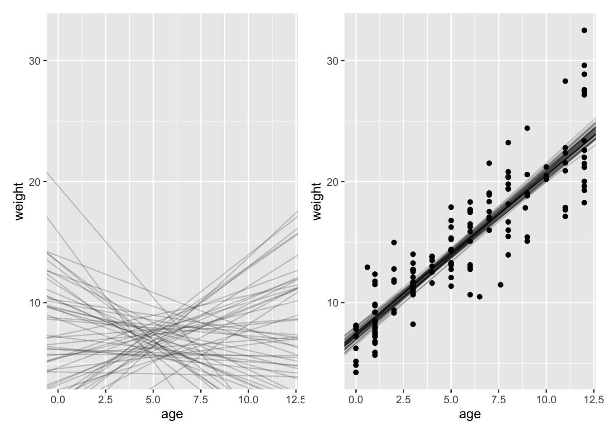

Please use an RMarkdown file to complete this assignment. Make sure you reserve code chunks for code and write out any interpretations or explanations outside of code chunks. Submit the knitted PDF file containing your code and written answers on Canvas.
Questions
From the Howell1 dataset, consider only people younger than 13 years old. Estimate the causal association between age and weight. Assume that age influences weight through two paths. First, age influences height, and height influences weight. Second, age directly influences weight through age-related changes in muscle growth and body proportions.
Draw the DAG that represents these causal relationships.
Click to see the answer
# Load required packageslibrary(dagitty)library(ggplot2)# Create the DAGdag <-dagitty("dag { A [age] H [height] W [weight] A -> H H -> W A -> W}")# Plot the DAGplot(dag)
Plot coordinates for graph not supplied! Generating coordinates, see ?coordinates for how to set your own.

The DAG shows three variables (age, height, and weight) with directed edges representing causal relationships. There are two paths from age to weight: 1. A direct path: age → weight (representing age-related changes in muscle growth and body proportions) 2. An indirect path: age → height → weight (representing the influence of age on height, which then affects weight)
Write a generative simulation that takes age as an input and simulates height and weight, obeying the relationships in the DAG.
Click to see the answer
set.seed(1)# Function to simulate data# i'm using feet/pounds, but you can stick with metric if you prefersimulate_growth <-function(age, bAH=0.35, bHW=5, bAW=5) { N <-length(age) # num individuals# simulate heights (caused by age plus variation) height <-rnorm(N, bAH*age, .2) # simulate heights (caused by age and height plus variation) weight <-rnorm(N, bAW*age + bHW*height, 4) #return data framedata.frame(age, height, weight)}sim =simulate_growth( runif(n=20, min=1, max=12) )par(mfrow =c(1, 3))plot(sim$age, sim$height)plot(sim$age, sim$weight)plot(sim$height, sim$weight)

This simulation: 1. Takes age as input 2. Generates height using a function of age 3. Generates weight as a function of both age (direct effect) and height (indirect effect) 4. Includes random variation (noise) in both height and weight
The plots show the expected relationships: both height and weight increase with age and height and weight are linearlly related.
Estimate the total causal effect of each year of growth on weight. Be sure to simulate your priors before estimating the model on the data.
Click to see the answer
# Load the Howell1 datasetlibrary(rethinking)data(Howell1)# Filter for children under 13d <- Howell1[Howell1$age <13,]# convert to lbslibrary(measurements)d$weight <-conv_unit(d$weight, from ="kg", to ="lbs")
The linear model for this relationship includes both an intercept and a slope – I need priors for these. The intercept is the weight of a child who is 0 (i.e., weight at birth). The slope is expected (average) change (gain) in weight each year.
# priorsn <-10#number of lines to simulatea_prior =rnorm(n, 7, 2) #interceptb_prior =runif(n, 0, 8) #slopeplot(NULL, xlim =range(d$age), xlab ="age",ylim =range(d$weight), ylab="weight")for( i in1:n ) abline( a_prior[i], b_prior[i], col ="#1c5253")
That’s fine. I’ll estimate the model usinbg quap.
m <-quap(data = d, alist( weight ~dnorm( mu, sigma), mu <- a + b*age, a ~dnorm(7,2), b ~dunif(0,8), sigma ~dexp(1) ))precis(m)
mean sd 5.5% 94.5%
a 15.142366 0.7464192 13.949444 16.335288
b 3.115430 0.1151904 2.931333 3.299526
sigma 5.510017 0.3183555 5.001224 6.018811
The total causal effect represents the combined impact of age on weight through both paths in the DAG: 1. Direct effect: age → weight (changes in muscle growth and body proportions) 2. Indirect effect: age → height → weight (growth in height affecting weight)
The posterior distribution shows our uncertainty about this total effect. The mean effect tells us how much weight we expect to increase per year of age, on average, taking into account both direct and indirect paths.